Source éditeur de texte de code

Pourquoi un autre éditeur de texte?
Simple, je n'ai pas aimé tous les autres, ils étaient tous trop plat (désolé mauvais croquis!), Ayant de toute façon gedit utilisé pendant des années, il recevait de plus en plus difficile de garder la compilation sans charges de dépendances de gnome, en regardant autour de Linux éditeurs de texte semble pour être très simple (leafpad) bêtement complexe (GVim, Bluefish), en essayant d'être tout pour tout le monde.
Un des meilleurs éditeurs de texte que j'ai utilisé est BBEdit mais qui n'est disponible que sur le mac, donc je peu la balle et a décidé d'écrire mon propre avec les meilleurs morceaux de BBEdit (le nom KKEdit est un coup de chapeau à BBEdit) , gedit et leafpad. Une interface épurée simple, pas de dépendances majeures, avec seulement les fonctions que j'utilise tout le temps, et TA DAH! KKEdit.
Qu'est-ce qu'il n'est pas!
KKEdit n'est pas un traitement de texte ou un éditeur de page web, il n'est pas et IDE! Il sera le code ne vous convient pas, il insister sur l'insertion de coutume supports (vraiment ennuyeux!), Il vous oblige l'habitude d'utiliser un style particulier, il n'a pas besoin de vous cassez tous vos doigts en essayant de frapper touche étrange et merveilleux combo et il n'est pas lié à un distro particulier, oh oui et il ne vous coûtera pas un centime!
Qu'est-ce qu'il est et fait
KKEdit est trompeusement simple éditeur de texte avec coloration syntaxique.
Il dispose également d'un menu de fonctions qui vous permet de passer instantanément à une définition de fonction, un menu de navigation qui va chercher dans tous les fichiers ouverts pour une définition de fonction, puis passez à cet onglet et allez à la ligne pertinente si elle ne peut pas trouver un définition dans tous les fichiers ouverts, il fera une recherche récursive dans le dossier du document sélectionné, vous pouvez également mettre en évidence une directive # include et il recherchera et essayez d'ouvrir le fichier, inclure des fichiers entourés par <> sera recherché dans / usr / include, fichiers entourés de "" sera recherchée dans le dossier actuel.
Outils externes peuvent être ajoutés soit globalement ou localement et quand exécuter peut soit remplacer le texte actuellement select avec leur production, remplacer tout le texte des fichiers, exécuter dans un terminal ou vous pouvez choisir d'ignorer la sortie former le script Bash, Python et perl peut être utilisé pour le langage de script ou d'un interprète qui utilise '#' comme un marqueur de commentaire.
Un certain nombre de scripts de démonstration simples sont inclus dans le dossier "demotoools" (bon nom hein).
Vous pouvez glisser et déposer un fichier sur la barre d'outils / menu principal pour ouvrir un fichier.
Session peut être sauvegardé et rechargé.
Tout montant de signets peut être ajouté n'importe où, la sélection d'un signet dans le menu basculera sur cet onglet et passer à la ligne appropriée.
Il suffit de taper un numéro de ligne dans la zone de texte sur la barre d'outils pour passer directement à cette ligne.
Manuel
Simple, je n'ai pas aimé tous les autres, ils étaient tous trop plat (désolé mauvais croquis!), Ayant de toute façon gedit utilisé pendant des années, il recevait de plus en plus difficile de garder la compilation sans charges de dépendances de gnome, en regardant autour de Linux éditeurs de texte semble pour être très simple (leafpad) bêtement complexe (GVim, Bluefish), en essayant d'être tout pour tout le monde.
Un des meilleurs éditeurs de texte que j'ai utilisé est BBEdit mais qui n'est disponible que sur le mac, donc je peu la balle et a décidé d'écrire mon propre avec les meilleurs morceaux de BBEdit (le nom KKEdit est un coup de chapeau à BBEdit) , gedit et leafpad. Une interface épurée simple, pas de dépendances majeures, avec seulement les fonctions que j'utilise tout le temps, et TA DAH! KKEdit.
Qu'est-ce qu'il n'est pas!
KKEdit n'est pas un traitement de texte ou un éditeur de page web, il n'est pas et IDE! Il sera le code ne vous convient pas, il insister sur l'insertion de coutume supports (vraiment ennuyeux!), Il vous oblige l'habitude d'utiliser un style particulier, il n'a pas besoin de vous cassez tous vos doigts en essayant de frapper touche étrange et merveilleux combo et il n'est pas lié à un distro particulier, oh oui et il ne vous coûtera pas un centime!
Qu'est-ce qu'il est et fait
KKEdit est trompeusement simple éditeur de texte avec coloration syntaxique.
Il dispose également d'un menu de fonctions qui vous permet de passer instantanément à une définition de fonction, un menu de navigation qui va chercher dans tous les fichiers ouverts pour une définition de fonction, puis passez à cet onglet et allez à la ligne pertinente si elle ne peut pas trouver un définition dans tous les fichiers ouverts, il fera une recherche récursive dans le dossier du document sélectionné, vous pouvez également mettre en évidence une directive # include et il recherchera et essayez d'ouvrir le fichier, inclure des fichiers entourés par <> sera recherché dans / usr / include, fichiers entourés de "" sera recherchée dans le dossier actuel.
Outils externes peuvent être ajoutés soit globalement ou localement et quand exécuter peut soit remplacer le texte actuellement select avec leur production, remplacer tout le texte des fichiers, exécuter dans un terminal ou vous pouvez choisir d'ignorer la sortie former le script Bash, Python et perl peut être utilisé pour le langage de script ou d'un interprète qui utilise '#' comme un marqueur de commentaire.
Un certain nombre de scripts de démonstration simples sont inclus dans le dossier "demotoools" (bon nom hein).
Vous pouvez glisser et déposer un fichier sur la barre d'outils / menu principal pour ouvrir un fichier.
Session peut être sauvegardé et rechargé.
Tout montant de signets peut être ajouté n'importe où, la sélection d'un signet dans le menu basculera sur cet onglet et passer à la ligne appropriée.
Il suffit de taper un numéro de ligne dans la zone de texte sur la barre d'outils pour passer directement à cette ligne.
Manuel
Menu de navigation
Menu Fonctions
Menu Outils
Préférences
Personnaliser la barre d'outils
Autres caractéristiques
Get It and Build it
Bug Reporting
Menu de navigation
Le menu de navigation comporte cinq sous-menus - aller à la définition, Open Inclure fichier, passez à la ligne, la recherche pour définir et recherche dans Gtk-Docs.
Pour aller là où une fonction etc sont définis, sélectionnez-le et choisissez «Atteindre la définition« KKEdit ensuite regarder dans les fichiers ouverts pour la définition et de passer à la page et sélectionnez la ligne appropriée comme ceci:
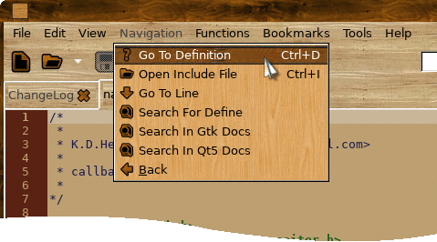

Comme vous pouvez le voir que la définition n'était pas dans un fichier ouvert KKEdit cherche la définition récursive à partir du dossier où le fichier a été ouvert à partir et s'il est trouvé en ouvrant le fichier et en sélectionnant la ligne avec la définition.
La profondeur de la recherche pour trouver une définition se trouve dans les prefs et 1 par défaut c'est à dire ne regarde que les définitions dans des fichiers dans le même dossier que tous les documents ouverts, faire attention à la définition de cette trop élevé car il peut causer un retard indésirable quand un clic droit si il doit regarder dans un grand nombre de sous-dossiers.
Vous pouvez également ouvrir un fichier d'inclusion sélectionnez simplement la ligne et sélectionnez Ouvrir Inclure fichier comme ceci:

Inclure les fichiers sont recherchés dans / usr / include ou le répertoire du document actuel est en fonction si le nom du fichier est entouré par '<>' ou '""'.
Recherche pour définir ouvrira une zone de saisie et vous permettre de taper dans une définition ou une partie d'une définition et allez essayer de le trouver dans les endroits habituels d'ouverture d'un fichier, si nécessaire, la recherche est sensible à la casse.
Menu Fonctions
Le menu Fonctions contient une liste de toutes les fonctions définies, variables et définit qui sont visibles dans ce fichier, pour passer à la définition de la fonction appropriée suffit de le sélectionner dans le menu comme ceci:

Le menu des fonctions sera mis à jour après l'enregistrement d'un fichier ou changer d'onglet.
Vous pouvez sélectionner la manière dont le menu des fonctions est affiché / réglé dans les préférences
Menu Outils
Le menu Outils vous permet d'exécuter un script externe exemple, pour ouvrir un terminal avec le répertoire de travail mis dans le dossier où le fichier actuel est ouvert:

Outils externes peuvent être soit ajoutés à l'échelle mondiale dans / usr / share / KKEdit / outils (si vous avez installé avec --prefix = / usr) ou localement dans ~ / .KKEdit / outils.
Outils externes sont passés quatre variables d'environnement:
KKEDIT_CURRENTFILE - Chemin dans le document actif.
KKEDIT_CURRENTDIR - Annuaire du document actuel.
KKEDIT_SELECTION - Actuellement le texte sélectionné.
KKEDIT_DATADIR - Annuaire de dossier global (par exemple / usr / share / KKEdit).
KKEDIT_HTMLFILE - fichier temporaire pour l'affichage html dans le document spectateur
Plus de variables peuvent être définies ultérieurement.
Outils externes sont triés par nom dans la boîte de dialogue de menu et d'outils d'édition.
Outils externes peuvent être créés à la main ou par l'intermédiaire du 'Outils-> Nouveau menu' comme ceci:
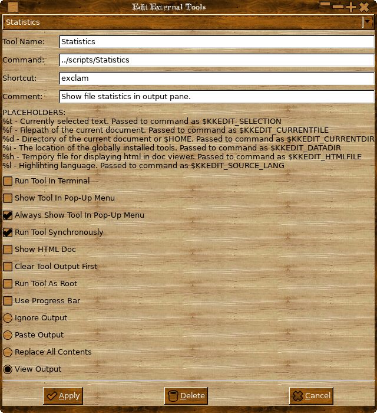
Les détenteurs de lieu sont:
% T - Actuellement le texte sélectionné, la même que la variable d'environnement $ KKEDIT_SELECTION passé à la commande.
% F - Chemin d'accès du document en cours, de même que la variable d'environnement $ KKEDIT_CURRENTFILE passé à la commande.
% D - Annuaire du document actuel ou $ {HOME}, de même que la variable d'environnement $ KKEDIT_CURRENTDIR passé à la commande.
% I -Le emplacement des outils mis en place à l'échelle mondiale, de même que la variable d'environnement $ KKEDIT_DATADIR passé à la commande.
% H - fichier temporaire pour l'affichage html dans le document spectateur, de même que la variable d'environnement $ KKEDIT_HTMLFILE passé à la commande.
Sélectionnant «Afficher la sortie 'enverra la sortie de l'outil à un volet dans le bas de l'éditeur, vous pouvez modifier la taille en faisant glisser la poignée et masquer / afficher le volet de l'menu" Affichage ", que stdout est capturé à partir de la sortie de l'outil si vous voulez capturer stderr vous devez rediriger vers stdout, vous ne pouvez pas capturer stdin, si vous avez besoin d'interagir avec l'outil utiliser le 'Run outil Dans Terminal' option.
Vous pouvez aussi éventuellement définir un raccourci clavier, il suffit de cliquer dans la boîte de raccourci, maintenez Ctrl enfoncée et appuyez sur une autre touche avec ou sans MAJ, à supprimer le raccourci suffit d'appuyer sur la touche «Supprimer».
Le panneau de sortie sera automatiquement affiché pour n'importe quel outil qui a cette option est sélectionnée, comme ceci:
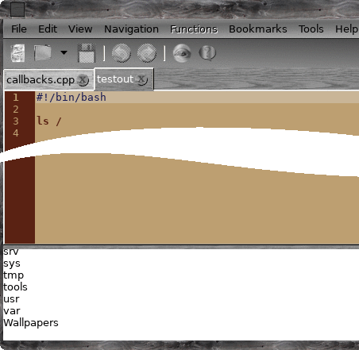
Cet exemple utilise le «Exécuter en tant que racine Script 'outil disponible dans le dossier« Outils Exemple extérieures »inclus avec cette archive.
IMPORTANT
Lorsque vous utilisez un outil qui exécute une commande en tant que root et un programme de privilèges root graphique n'a pas été défini l'outil est automatiquement exécuté dans un terminal.
Sélection 'Show HTML Doc' pour afficher le fichier $ KKEDIT_HTMLFILE soit le spectateur Gtk Doc ou votre navigateur par défaut, il est utilisé dans l'exemple outil installé «Ouvrir page de manuel 'pour afficher la page de manuel de la mise en sélec (si elle existe et si vous avez man2html installé, la plupart des gens).
Seuls les outils qui ont "Afficher outil Pop-Up Menu" est sélectionné apparaîtra dans le menu pop-up si vous avez également sélectionné du texte.
Les outils qui ont le "Toujours afficher dans une fenêtre contextuelle" sélectionné montrer dans le menu contextuel indépendamment de w ue le texte est ou n'est pas sélectionnée.
Les commandes peuvent être comp plaies »c'est à dire les commandes« cat / tmp / fichier texte | tête », mais en utilisant des tuyaux à un terminal ne permet pas toujours ce que vous voulez dire 'xterm -hold e' chat" / tmp / texte "| tail-f '' va travailler et montrer la queue du fichier mais ne suivra pas correctement c'est une fonctionnalité / problème de xterm et hors de mon contrôle :(
Pour les commandes très complexes créent un script et mis en «commande» sur le chemin de fichier de votre script, les chemins de fichiers peuvent être absolues ou relatives (voir les exemples de scripts).
Les outils peuvent être modifiés en sélectionnant dans la liste déroulante, si vous tentez de modifier un outil installé à l'échelle mondiale (c.-à-dire un dans / usr / share / KKEdit / outils), vous devez avoir les privilèges root.
Vous pouvez également afficher une barre de progression de votre outil en sélectionnant la case à cocher "Utiliser Prgress Bar", un bar sera créé pour vous et vous pouvez commander en écrivant des commandes simples à un fichier, le chemin d'accès de fichier est contenu dans la variable d'environnement ' $ KKEDIT_BAR_CONTROL ", vous pouvez écrire un nombre simple entre 0 et 100 pour définir la jauge,« pouls »de la barre d'impulsion et« quitter »pour tuer la barre, vous n'avez pas besoin d'écrire spécifiquement le« quitter »la commande car il sera envoyé automatiquement lorsque votre outil se termine, NB si vous réglez votre outil pour tourner de manière asynchrone, vous devez envoyer le 'quitter' commander votre auto.
Il est un exemple de la façon de contrôler la barre dans les exemples d'outils dans / usr / share / KKEdit / Outils Exemple externes.

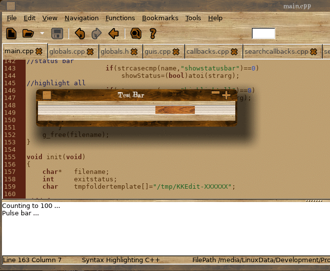
Le titre de la fenêtre de la barre de progression est automatiquement réglé sur le nom de votre outil.
Préférences
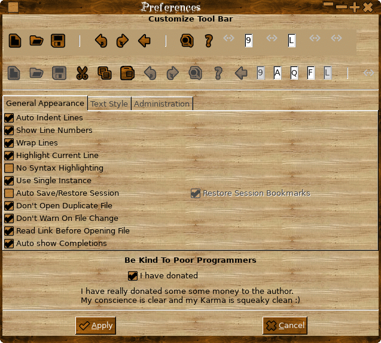
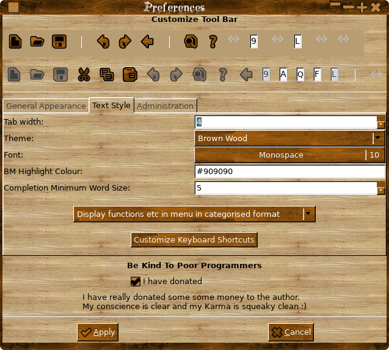

Le fichier est créé Préférences ~ / .KKEdit / kkedit.rc et sera créé / recréé en quittant KKEdit.
Les préférences doivent être définies à partir de «Édition-> Préférences»
Vous pouvez définir la commande à exécuter un outil externe dans un terminal à partir d'ici.
Sélectionnant l'option "Ne pas ouvrir le fichier en double» sera passer à l'onglet de ce fichier plutôt que d'ouvrir une autre copie.
Sélection "Ne pas avertir sur le changement File" pour supprimer la boîte de dialogue décroissante quand un fichier ouvert est modifié sur le disque (par une autre application), l'onglet sera toujours mis à jour.
La «commande Exécuter en tant racine» vous permet de définir votre graphique programme de privilèges root préféré, si cette zone est vide un terminal sera utilisé pour demander les mots de passe admin ( Voir ici ), la «commande Terminal» sera utilisé pour ouvrir un terminal, si cette zone est vide alors le «xterm-e" par défaut sera utilisé.
Vous pouvez également définir la couleur de surbrillance des lignes favoris, et aussi d'afficher la bookmarkbar.
Vous pouvez également personnaliser les raccourcis clavier à partir d'ici, il suffit de cliquer sur le bouton et vous obtiendrez une fenêtre de dialogue comme ceci:
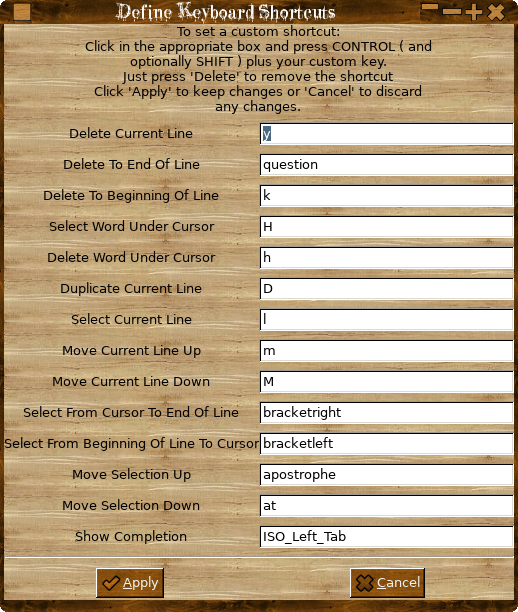
Pour modifier le raccourci par défaut, cliquez dans la case correspondante et appuyez sur une touche de commande et votre choix de clés avec ou sans MAJ, raccourcis doivent utiliser une méthode.
Répétez le jusqu'au-dessus vous avez défini tous les raccourcis que vous souhaitez et cliquez sur «Appliquer» pour conserver les modifications ou «Annuler» pour deviner quoi?
Vous pouvez également choisir d'ouvrir un fichier normalement ou en lisant le lien (s'il s'agit d'un lien symbolique) d'abord, cela signifie que filepath sera soit le chemin vers le lien ou le chemin vers le fichier réel, c'est à portée de main lorsque vous utilisez la 'Open 'option dans le menu de l'onglet que vous allez choisir de sélectionner les fichiers à ouvrir à partir du dossier le lien est dans le dossier ou le fichier était réel est, essayer et voir que c'est beaucoup moins compliqué qu'il n'y paraît!
Le «thème» peut être défini pour les prefs via le menu déroulant, mise à jour de la page en cours est «en direct», cliquez sur «Appliquer» pour définir le thème à l'échelle mondiale ou sur «Annuler» pour ignorer les changements.
Les thèmes sont stockés dans "/usr/share/gtksourceview-2.0/styles" (par défaut installé thèmes) ou localement dans ~ / .gnome2 / gedit / styles, pour la compatibilité avec gedit comme la plupart des thèmes de gktsourceview semblent être gedit-centrique;)

Personnaliser la barre d'outils
Vous pouvez personnaliser ce qui apparaît sur la barre d'outils en cliquant simplement sur un bouton pour l'ajouter au menu comme ceci:

Et puis faites-le glisser à l'endroit où vous souhaitez qu'il apparaisse sur la barre d'outils comme ceci:

Pour supprimer un élément de la barre d'outils il suffit de tenir le «contrôle» et cliquez sur le point d'être supprimé.

Certains éléments ne peuvent être ajoutés une fois 'Enregistrer', 'Ouvrir' etc quand ils ont été ajoutés, ils seront grisés et ne peuvent être ajoutés à nouveau, en supprimant les rend à nouveau disponible, le séparateur et le détendeur peuvent être utilisées plusieurs fois .
Vous pouvez également choisir de masquer / afficher la barre d'outils dans le menu «Affichage».
Autres caractéristiques
Copiez le nom de fichier dans le menu de l'onglet.
Copiez filepath de menu de l'onglet.
Vérifier l'orthographe de document à partir de menu de l'onglet.
fonction de copie définir.
Aller à fonctionner définition.
Signet bascule.
Exemple l'application unique ou multiple.
Ouvrir comme hexdump.
Trouver la définition de l'API dans Gtk de Doc.
Autre
Cliquant sur un onglet de droite permet de copier le nom de fichier du document, le chemin du fichier, vérifier l'orthographe du document, split / insplit la vue, réglez la mise en évidence de la source et rapidement d'autres fichiers ouverts dans le même répertoire que le document courant (pratique pour ouvrir rapidement la tête fichiers).

Le menu contextuel du document contient également la fonction «Atteindre la définition" pour plus de commodité.
Sélection de la définition sera le copier dans le presse-papiers.
S'il n'y a pas de définition valable choisi l'option de menu ne sera pas montré.

Le menu de droite clic contextuel:

Dialogue correcteur orthographique
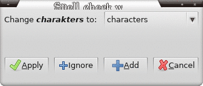
Favoris
Tout montant de signets peut être ajouté, en sélectionnant l'un va passer à ce document et en ligne.
Les signets sont enregistrés avec le "Save Session" et peuvent être restaurées avec le «Restaurer session avec des signets 'menu.
Les signets sont maintenant activées si vous placez le curseur sur une ligne avec un signet il ajouter si ce n'est pas déjà en signet ou supprimer le signet si c'est le cas, vous pouvez utiliser le menu "Basculer Bookmark» dans le menu principal ou le cadre principal menu, vous pouvez aussi cliquer dans la barre des signets pour passer une marque ou désactiver (vous verrez une petite icône de signet).
Vous pouvez également supprimer tous les signets de tous les documents ouverts en sélectionnant «Supprimer tous les signets" dans le menu.
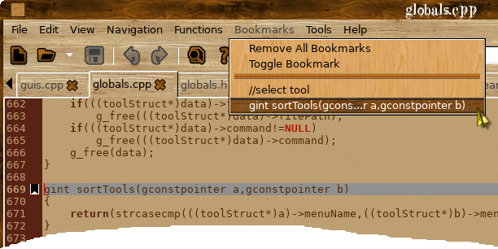
Vous pouvez ouvrir un fichier comme un vidage hexadécimal (ce n'est pas un éditeur hexadécimal si cela peut changer plus tard) comme ceci:

Consulter Gtk API
Vous pouvez consulter une déclaration d'API de toute gtk-doc installé est installé en sélectionnant tout ou partie d'un nom de l'API comme ceci:
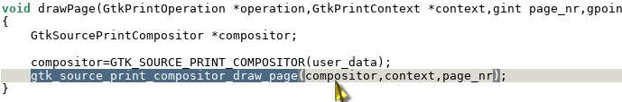
Et puis en sélectionnant "Rechercher Dans Gtk-Docs 'forment le menu de navigation ou dans le menu pop-up clic droit comme ceci:
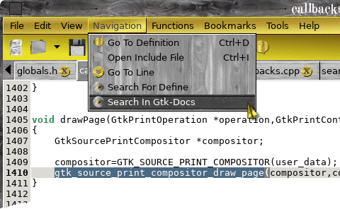
Et si vous avez construit avec l'option enable-DocViewer à configurer (par défaut), vous obtiendrez une fenêtre pop-up avec une liste de liens possibles avec l'API que vous voulez, s'il n'y a qu'un seul lien possible vous irez tout droit à qui.
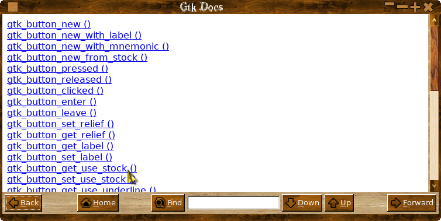
Cliquez sur le lien:
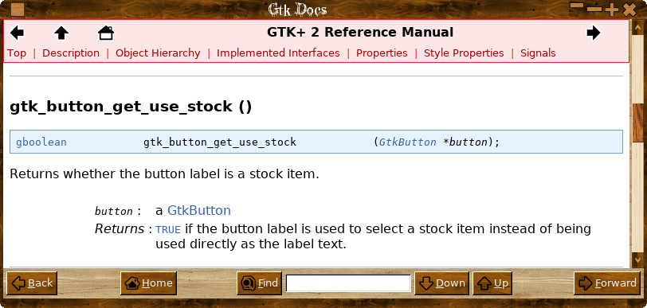
Les liens peuvent être cliqués et suivies dans le doc spectateur Gtk, et les fonctions etc peuvent être copiées et collées dans votre document.
Si vous avez sélectionné tous les 'gtk_button_get_use_stock' nom de l'API que vous seriez allé directement à l'écran montré.
Vous pouvez également saisir manuellement un terme de recherche dans la zone et appuyez sur "Entrée" ou cliquez sur "Rechercher".
Vous pouvez effectuer une recherche dans la page affichée en entrant un terme de recherche dans la case et en cliquant sur «DOWN» pour rechercher vers l'avant et 'Up' à la recherche retour.
Les autres caractéristiques comprennent:
Peut être configuré pour sauvegarder automatiquement et restaurer une session (avec ou sans signets) lors du démarrage et de sortie.
Vous pouvez enregistrer manuellement et restaurer les sessions via le menu "Fichier", vous pouvez également restaurer une session avec ou sans les signets enregistrés (signets sont enregistrés automatiquement avec la session), si vous modifiez un fichier sur le disque, sans ré-enregistrement de la session, vous peuvent trouver que des signets sont biaisés.
Vous pouvez exécuter KKEdit soit comme une application à instance unique ou comme une application multi-instance, réglé via le menu Préf. Des instances uniques sont propres à chaque espace de travail.
Vous pouvez également ouvrir une nouvelle instance de KKEdit dans le menu fichier, indépendamment des réglages de prefs.
Utilisation de Racine
Vous pouvez également ouvrir une nouvelle instance de KKEdit avec des privilèges d'administrateur dans le menu fichier, vous pouvez définir une interface graphique pour obtenir les privilèges root dans la fenêtre des prefs, je vous recommande, GtkSu ( disponible ici ), utiliser 'gtksu -', les utilisateurs de Ubuntu peut avoir à utiliser "gtksu - sudo 'pour arrêter gtk3 plaindre, d'autres options (en fonction de votre système et que vous avez installé sont:« gksu -', «sudo-A 'et ainsi de suite, si pas d'interface graphique pour obtenir les privilèges root est installé un terminal sera utilisé en fonction de vos paramètres de préférences.
!!ATTENTION!!
Éditer des fichiers avec des privilèges d'administrateur peut sérieusement endommager votre système s'il est mal utilisé.
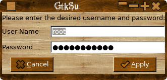
Rechercher / Remplacer
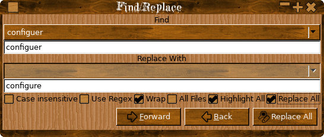
Rechercher et remplacer utilise des expressions de regex, la recherche rapide sur la barre d'outils n'a pas, à la recherche arrière ne peut pas être utilisé avec regex, le texte de la recherche / remplacer les boîtes sont considérées comme des chaînes littérales.
Vous pouvez rechercher et remplacer dans un seul fichier ou dans tous les fichiers ouverts, si vous choisissez de faire un «R EPlacez A ll 'dans tous les fichiers ouverts, vous serez invité à confirmer l'action.
L'option 'wrap' pour trouver / remplacer est ignoré lors de la recherche dans tous les fichiers ouverts.
Vous pouvez passer à une ligne utilisant l'entrée de la barre d'outils:

Vous pouvez faire une recherche «en direct», juste en tapant dans le moteur de recherche de toobar:

Scission mode d'affichage:

Le courant coloration de la syntaxe de la source est maintenant sélectionnable via l'onglet '«menu contextuel comme ceci:
Soyez conscient que la valeur par défaut pour mettre en évidence un fichier est défini par le système de type mime et peut donc changer après la sauvegarde / chargement. -types mime d'un fichier ne peut pas Usu allié être réglés manuellement, mais dépend de système de magie auto trucs, déposer suffixe etc

Vous pouvez également activer / désactiver différents bits et peices dans le menu «Affichage»: 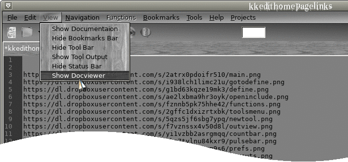
La complétion de code
Si vous avez activé "Auto Show achèvement» dans les prefs alors que vous tapez, vous verrez les différentes options de complétion de code comme ceci:

Le nombre de lettres dans le mot avant le pop up apparaît est situé dans les prefs.
Vous pouvez également forcer la boîte de dialogue d'achèvement de pop-up à l'aide d'un raccourci clavier (réglé par les prefs) comme ceci:

Comme vous pouvez le voir dans ce qui précède, vous pouvez ajouter une liste de mots personnalisés à ajouter à la boîte de dialogue d'achèvement en créant simpley le fichier ~ / .KKEdit / customcompletions et ajouter des mots à elle, le fichier doit se terminer par un saut de ligne, si le fichier ne n'existait pas d'autre choix "mots personnalisés» sera affiché.
Fonction et finitions variables indiqueront la définition lorsque le bouton "Détails" est basculé sur, les mots personnalisés et documents n'ont pas de détails supplémentaires.
Créer ocumentation D avec Doxygen

Vous pouvez créer une documentation pour votre code si vous avez doxygen installé en sélectionnant "Créer la documentation» dans le menu «Fichier», la documentation sera créé dans le dossier actuel et affiché avec soit intégré dans DocViewer ou le navigateur du système, la première fois vous exécutez ce qu'il peut y avoir un petit retard, tandis que les premiers fichiers sont créés par doxygen, après que la sélection "Créer Documentation" à nouveau mises à jour juste les fichiers, s'il n'y a pas un fichier d'un appelé «Doxyfile 'dans le dossier courant un fichier de configuration par défaut est créé pour vous, ce fichier peut vérifiés manuellement en fonction de vos besoins, je vous recommande également d'installer Graphviz pour les belles organigrammes de fantaisie, la plupart des distributions auront des forfaits pour ces deux applications.
Si doxygen est pas installé, vous n'aurez pas un menu "Créer la documentation", il suffit d'installer et (éventuellement) Graphviz et redémarrez KKEdit et le menu apparaîtra.
Intégration du document
Il ya une certaine intégration avec les documents en caisse par doxygen si, et seulement lors de l'utilisation intégré dans docview, sélectionnez «Documentation» forment le menu "Fichier" et la visionneuse de document apparaîtra comme ci-dessus, il peut y avoir un peu de retard le premier fois que vous utilisez cette fonction alors que doxygen crée tous les fichiers nécessaires, les utilisations ultérieures sera beaucoup plus rapide que doxygen sera simplement mettre à jour les fichiers nécessaires.
Cliquez sur l'onglet "Fichiers pour obtenir une liste des fichiers, puis cliquez sur SHIFT un nom de fichier comme ceci:
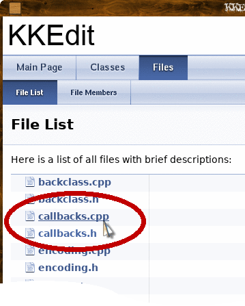
Le spectateur doc ouvrira la page et l'éditeur va également ouvrir le fichier ou de passer à l'onglet approprié comme ceci:
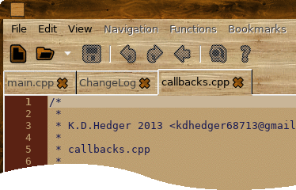

Sélectionnez une fonction, par exemple:

Montre:
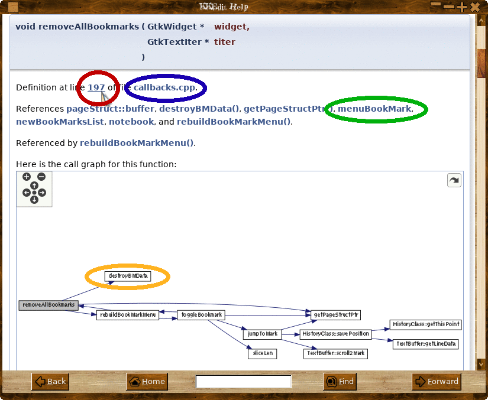
De là, vous pouvez déplacer, cliquez sur le numéro de la ligne (RED) pour ouvrir l'onglet de fichier / interrupteur et allez dans la ligne dans l'éditeur et les docs comme ceci:


Maj cliquant sur le nom de fichier (BLEU) va ouvrir le fichier ou changer d'onglet ci-dessus.
En cliquant sur une référence (GREEN) ira à la documentaion pour que refence où vous pouvez encore choisir un numéro de ligne / fichier etc
Vous pouvez également cliquer sur les différents boîte de graphique de se rendre à une définition de fonction.
Vous pouvez ouvrir un fichier en cliquant sur SHIFT une boîte dans le graphe de dépendance inclure un fichier comme ceci:
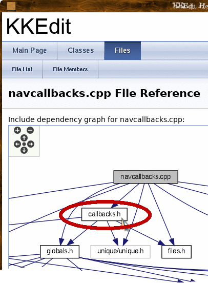
Cela permettra d'ouvrir le fichier ou de passer à l'onglet correspondant comme ci-dessus.
Vous pouvez modifier la Doxyfile par défaut pour ajouter plus / moins d'infos sur le navigateur.
Le principal changement que vous voulez faire dans le fichier 'Doxyfile' est de changer le nom du projet ainsi ouvert puis le fichier 'Doxyfile »qui sera dans le même dossier que votre code source et changer la ligne" PROJECT_NAME = "Mon projet" " à Somthing plus approprié.
Pour le moment, la documentation doit être laissé dans le dossier html créé dans le dossier avec votre code source, ce sera probablement cjange plus tard pour vous permettre de régler le dossier de la documentation.
Si vous souhaitez plus d'informations sur les différentes options disponibles dans la Doxyfile run 'doxygen -g' de la ligne de commande et un défaut Doxyfile sera créé qui est fortement commenté.
Plugins
KKedit prend désormais en charge les plugins simples 'c', un exemple plugin est disponible sur la page des plugins, cela va ajouter un élément de menu dans le menu «Aide» qui permet d'afficher toutes les fonctions actuellement prises en charge le système de plugin c'est encore un travail en cours si les bugs et suggestions sont les bienvenues, je vais être en ajoutant des plugins supplémentaires qui seront disponibles à partir de ce site, mais si vous écrivez un plugin ou tout simplement avoir une idée pour un s'il vous plaît faites le moi savoir.
Les plugins peuvent être activés / désactivés dans le menu 'Préférences' Plugin de le menu "Edition".
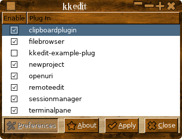
Il ya deux dossiers plugins qui seront à la recherche de plugins: / usr / share / KKEdit / plugins et ~ / .KKEdit / plugins, plugins peuvent être dans des sous-dossiers et devraient être nommé comme «libPLUGNAME.so '
Voir l'exemple installé le plugin pour les fonctions de base et un Makefile de base.
Tous
les détails et les plugins supplémentaires peuvent être
trouvés ici:
Obtenez-le ici!
KKEdit
Dépendances
Un raisonnablement nouveau Xorg et bureau.
gtk-24.02.13.
gtksourceview-2.11.1.
ctags.
Autotools.
libunique-1.1.6
wget ou curl.
webkitgtk-1.10.x. (Optionnel mais recommandé)
une orthographe 0.60.6.1. (optionnel mais recommandé)
Gtk Su (facultatif mais conseillé)
Editeur page de manuel (optionnel mais recommandé)
Glib-réseau (facultatif mais conseillé)
webkit est est une dépendance optionnelle si vous voulez construire le spectateur désactiver Gtk-doc en ajoutant --disable-DocViewer à ./configure ou ./autogen.sh.
La vérification orthographique via aspell est facultative et peut être activé par le commutateur 'enable-aspell' à ./configure ou ./autogen.sh.
La présence de "GtkSu" une deuxième "Manpage Editor" sont détectés à configurer et le cas échéant sera utilisée, dans le cas de GtkSu il est utilisé pour obtenir des privilèges d'administrateur lors de l'ouverture d'un éditeur de racine dans le menu fichier, si Manpage Editor est détecté un élément de menu est ajouté au menu de fichiers, les deux peuvent être téléchargés à partir de ce site.
Glib-réseau est un environnement d'exécution de litispendance et est utilisé pour faire une recherche google si "Ouvrir la page de l'homme» ou «Recherche par GTK-Doc" ne peut pas trouver quoi que ce soit.
Si vous utilisez une distribution basée sur les sources comme l'EPA ou Slackware, vous devriez avoir tous les (plus) de ces installés, si vous utilisez une distribution pré-emballés comme debian et vous n'avez pas compilé à partir des sources avant que vous pourriez avoir à installer des paquets de développement à savoir à savoir pour debian (ce qui est de la mémoire) le paquet build-essential et les paquets -dev pour gtk2 et
gtksourceview, consultez la documentation de votre distributions et vous distributions forums de l'aide générale sur la compilation de logiciel.
Bâtiment
Déballez la boule de goudron, allez dans le dossier KKEdit et course:
./autogen.sh --prefix = / usr --enable-aspell --enable-DocViewer
faire
sudo make install
(./configure Peut maintenant être utilisé à la place de ./autogen.sh - pas besoin de autotools).
VEUILLEZ lire le fichier README!
Voir le fichier INSTALL pour les détails complet.
Rapports de bogues
S'il vous plaît envoyer des rapports de bugs, des suggestions de fonctions, de grands sacs de bijoux, etc à:
kdhedger68713@gmail.com
Je vais revenir vers vous dès que possible.
Maison